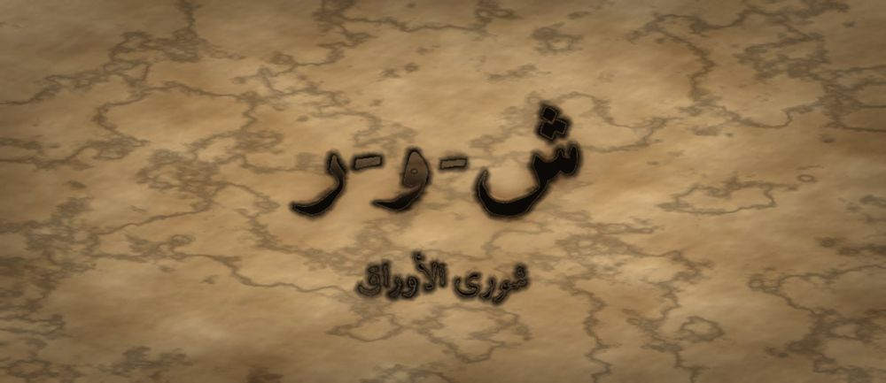

مَطبعةُ جُذور · دبي · MCMXXVI · سِلْسِلَةُ فَنِّ البَيان

مَرحلةُ الأَوْرَاق · الفئة ١٣–١٥ · الجذر ش-و-ر · خديجة بنت خويلد
❦ ✦ ❧
السِّفْرُ ١٥ — شورى الأوراق
«رَأْيِي وَاحِدٌ — وَرَأْيُ الْمَجْلِسِ أَوْسَعُ»

الرِّسَالَةُ الجَوْهَرِيَّة
الشُّورَى لَيْسَتْ تَصْوِيتًا يَغْلِبُ فِيهِ الْأَكْثَرُ، بَلْ مَجْلِسٌ يَخْرُجُ مِنْهُ رَأْيٌ لَمْ يَكُنْ يَمْلِكُهُ أَحَدٌ وَحْدَهُ. حِينَ يَتَعَلَّمُ الْيَافِعُ أَنْ يَطْلُبَ الْمَشُورَةَ قَبْلَ الْقَرَارِ، يَكْتَشِفُ أَنَّ طَلَبَ الرَّأْيِ قُوَّةٌ لَا نَقْصٌ، وَأَنَّ الْعَقْلَ يَتَّسِعُ بِالْعُقُولِ.
بِطَاقَةُ هُوِيَّةِ السِّفْر
| المستوى / الدرجة | أَوْرَاق — وَرَقَةٌ تَتَشَاوَرُ (الدرجةُ الرابعةُ في مستوى الأوراقِ) |
| الفئة العمرية | ١٣–١٥ سنة · نطاقُ تداخلٍ يمتدُّ إلى ١٦ للمتعلّمِ المتقدّمِ |
| الجذر الأساسي | ش – و – ر · الشُّورَى: أَنْ نَسْتَخْرِجَ الرَّأْيَ كَمَا يُسْتَخْرَجُ الْعَسَلُ |
| أسرة الجذر | شُورَى · شَاوَرَ · مَشُورَة · اِسْتَشَارَ · مُسْتَشَار · تَشَاوُر |
| المحطّة | الشُّورَى — أنْ يصيرَ القرارُ ثمرةَ مجلسٍ لا ثمرةَ رأسٍ واحدٍ |
| المرساة الحسّيّة | الجلوسُ في دائرةٍ وتمريرُ حجرٍ أملسَ: من يمسكُهُ يتكلَّمُ، ومن يُصغي يفتحُ كفَّهُ استعدادًا |
| الاستعارة | الأوراقُ لا تصنعُ الغذاءَ بورقةٍ واحدةٍ؛ كلُّ ورقةٍ تأخذُ نصيبَها من الضوءِ فتشبعُ الشجرةُ كلُّها |
| الشخصيتان الحكيمتان | خديجةُ بنتُ خويلدٍ (صاحبةُ الرأيِ والتثبيتِ) + الجَدّةُ رملة |
| الشخصية الرمزيّة | نورُ الأوراقِ — بطلةُ السلسلةِ في مرحلةِ الأوراقِ |
| الشخصية المضادّة | الرِّيحُ الْمُنْفَرِدَةُ — شخصيّةٌ رمزيّةٌ (لا تاريخيّةٌ) تُمثِّلُ الاستبدادَ بالرأيِ، وتتعلّمُ أنْ تسألَ |
| المهارة (فعل) | أُشَاوِرُ — الحلقةُ الخامسةَ عشرةَ في القوسِ التراكميِّ للسلسلةِ |
| المرجعُ النظريّ | استرشادًا بـ TRT — نظرية القراءة الملموسة · ومجالُ الوعيِ الاجتماعيِّ العميقِ |
| حدّ اللمس | تمريرُ الحجرِ يتمُّ بوضعِهِ على الأرضِ أو المنضدةِ؛ ولا تلمسُ يدُ المرافقِ يدَ اليافعِ، وأيُّ ملامسةٍ بينَ الأقرانِ اختياريّةٌ بموافقةٍ صريحةٍ |
| ملاحظة القياس | المؤشّراتُ وصفيّةٌ للرصدِ والوصفِ، تُقرأُ نموًّا لا تُستعمَلُ بوّابةً |
صَاحِبُ السِّفْرِ مِنَ التُّرَاث
خديجةُ بنتُ خويلدٍ رضيَ اللهُ عنها سيّدةٌ قرشيّةٌ من مكّةَ قبلَ الإسلامِ وبعدَهُ، اشتُهِرَتْ بإدارةِ تجارةٍ واسعةٍ وبرجاحةِ عقلِها؛ وهيَ أولُ من آمنَ بالنبيِّ صلّى اللهُ عليهِ وسلّمَ، وثبَّتَتْهُ برأيٍ هادئٍ في أشدِّ لحظاتِهِ اضطرابًا. نستلهمُ منها هنا: أنَّ المشورةَ الصادقةَ تُهدِّئُ قبلَ أنْ تُوجِّهَ، وأنَّ الرأيَ الرزينَ يُبنى على معرفةٍ بالشخصِ لا على انطباعٍ عابرٍ.
الشَّخْصِيَّةُ المُضَادَّة — الرِّيحُ الْمُنْفَرِدَةُ — شخصيّةٌ رمزيّةٌ لا تاريخيّةٌ، تهبُّ فتقرّرُ وجهتَها وحدَها ولا تسألُ أحدًا، لأنّها تظنُّ أنَّ السؤالَ اعترافٌ بالضعفِ. لا تُهزَمُ ولا تُشيطَنُ؛ بل تتعلَّمُ في النهايةِ أنْ تسألَ الأوراقَ عن اتّجاهِ المطرِ، فتصلُ أسرعَ وقد حملتْ معها بذورًا لم تكنْ تعرفُها.
الجَذْرُ وَأُسْرَتُه
ش-و-ر — شُورَى · شَاوَرَ · مَشُورَة · اِسْتَشَارَ · مُسْتَشَار · تَشَاوُر
الجذرُ (ش-و-ر) أجوفُ، وسطُهُ واوٌ؛ ومعناهُ الأصليُّ استخراجُ العسلِ من الخليّةِ — ومنهُ «شارَ العسلَ» أي استخرجَهُ، فالمشورةُ استخراجُ الرأيِ الكامنِ. يلاحظُ المعلّمُ فرقَ الأوزانِ: «شاوَرَ» على وزنِ فاعَلَ يقتضي المشاركةَ بينَ طرفينِ، و«تَشاوُر» على تَفاعُلٍ يقتضي الاشتراكَ الجماعيَّ، و«اسْتَشارَ» على اسْتَفْعَلَ فيهِ معنى الطلبِ.
القِصَّةُ الكَامِلَة
المشهد ١ — نُورُ تُقَرِّرُ وَحْدَهَا فَتَخْسَرُ نِصْفَ الْحَدِيقَةِ
صَارَتْ نُورُ كَبِيرَةً بِمَا يَكْفِي لِتَقُودَ مَشْرُوعًا صَغِيرًا: تَرْتِيبَ سَقْيِ الْحَدِيقَةِ. جَمَعَتْ فِي رَأْسِهَا خُطَّةً جَمِيلَةً وَقَالَتْ: «أَنَا أَعْرَفُ النَّبَاتَاتِ، وَقَدْ تَعِبْتُ فِي التَّفْكِيرِ، فَلِمَاذَا أُضَيِّعُ الْوَقْتَ فِي السُّؤَالِ؟» وَنَفَّذَتْ. وَفِي الْيَوْمِ الثَّالِثِ ذَبَلَ رُكْنٌ كَامِلٌ مِنَ الْحَدِيقَةِ. وَقَفَتْ نُورُ حَائِرَةً، فَقَالَ لَهَا نَبْتٌ صَغِيرٌ فِي ذَلِكَ الرُّكْنِ: «لَوْ سَأَلْتِنِي لَقُلْتُ لَكِ إِنَّ الشَّمْسَ تَغِيبُ عَنَّا مُبَكِّرًا، وَنَحْتَاجُ الْمَاءَ صَبَاحًا لَا مَسَاءً.» فَاحْمَرَّ وَجْهُ نُورَ، لَا لِأَنَّ خُطَّتَهَا كَانَتْ غَبِيَّةً، بَلْ لِأَنَّهَا كَانَتْ نَاقِصَةً بِمِقْدَارِ سُؤَالٍ وَاحِدٍ. وَقَفَتْ نُورُ تَنْظُرُ إِلَى الرُّكْنِ الذَّابِلِ طَوِيلًا. لَمْ يَكُنِ الْأَمْرُ أَنَّهَا لَا تَعْرِفُ، بَلْ أَنَّهَا لَا تَعْرِفُ مَا لَا تَعْرِفُهُ. وَتَذَكَّرَتْ كَلِمَةَ الْجَدَّةِ رَمْلَةَ الْقَدِيمَةَ: «أَخْطَرُ مَا فِي الرَّأْيِ أَنْ يَبْدُوَ كَامِلًا لِصَاحِبِهِ.»
المشهد ٢ — الرِّيحُ الْمُنْفَرِدَةُ تُشَجِّعُ الِانْفِرَادَ بِالرَّأْيِ
مَرَّتْ بِهَا الرِّيحُ الْمُنْفَرِدَةُ وَهِيَ مُسْرِعَةٌ، فَقَالَتْ: «لَا تَنْدَمِي يَا نُورُ! الْقَائِدُ الَّذِي يَسْأَلُ يَبْدُو ضَعِيفًا. أَنَا لَا أَسْأَلُ أَحَدًا عَنِ اتِّجَاهِي، وَلِهَذَا أَصِلُ أَوَّلًا.» قَالَتْ نُورُ: «وَإِلَى أَيْنَ تَصِلِينَ؟» فَسَكَتَتِ الرِّيحُ لَحْظَةً ثُمَّ قَالَتْ: «إِلَى... حَيْثُ أَذْهَبُ.» وَكَانَ فِي دَاخِلِهَا خَوْفٌ قَدِيمٌ: تَخَافُ إِنْ سَأَلَتْ أَنْ يُقَالَ لَهَا إِنَّهَا مُخْطِئَةٌ، فَتَتَوَقَّفَ، فَتَنْتَهِيَ. فَجَرَّبَتْ نُورُ طَرِيقَتَهَا مَرَّةً أُخْرَى فِي أَمْرٍ آخَرَ، فَنَجَحَتْ نِصْفَ نَجَاحٍ — وَكَانَ النِّصْفُ النَّاقِصُ هُوَ دَائِمًا الْجُزْءَ الَّذِي يَعْرِفُهُ غَيْرُهَا وَلَا تَعْرِفُهُ هِيَ. وَفِي اللَّيْلِ سَمِعَتْ نُورُ الرِّيحَ تَمُرُّ سَرِيعَةً وَهِيَ تُرَدِّدُ: «لَا وَقْتَ... لَا وَقْتَ.» فَسَأَلَتْهَا: «وَمَاذَا لَوْ تَأَخَّرْتِ سَاعَةً وَسَأَلْتِ؟» فَلَمْ تُجِبْ. وَأَدْرَكَتْ نُورُ أَنَّ السُّرْعَةَ أَحْيَانًا قِنَاعٌ نَلْبَسُهُ لِنُخْفِيَ خَوْفَنَا مِنَ الْجَوَابِ.
المشهد ٣ — خَدِيجَةُ وَالْجَدَّةُ رَمْلَةُ تَفْتَحَانِ الْمَجْلِسَ
جَلَسَتْ فِي فِنَاءِ الْبَيْتِ خَدِيجَةُ بِنْتُ خُوَيْلِدٍ، الْمَرْأَةُ الَّتِي كَانَتْ تُدِيرُ تِجَارَةً وَاسِعَةً وَتَعْرِفُ الرِّجَالَ بِعُقُولِهِمْ لَا بِأَصْوَاتِهِمْ، وَمَعَهَا الْجَدَّةُ رَمْلَةُ. قَالَتْ خَدِيجَةُ: «يَا نُورُ، الْمَشُورَةُ لَيْسَتْ أَنْ تَسْأَلِي: هَلْ رَأْيِي صَحِيحٌ؟ فَهَذَا سُؤَالٌ يَطْلُبُ مُوَافَقَةً. الْمَشُورَةُ أَنْ تَسْأَلِي: مَاذَا أَرَى أَنَا وَلَا تَرَوْنَ، وَمَاذَا تَرَوْنَ وَلَا أَرَى؟» ثُمَّ قَالَتِ الْجَدَّةُ: «وَلِلْمَجْلِسِ شَكْلٌ يَا نُورُ. اِجْلِسُوا دَائِرَةً لَا صَفًّا، وَضَعُوا حَجَرًا أَمْلَسَ فِي الْوَسَطِ: مَنْ أَخَذَهُ تَكَلَّمَ، وَمَنْ أَنْصَتَ فَتَحَ كَفَّهُ. وَلَا يُؤْخَذُ الْحَجَرُ مِنْ يَدٍ؛ يُوضَعُ فِي الْوَسَطِ ثُمَّ يُرْفَعُ.» ثُمَّ زَادَتْ خَدِيجَةُ: «وَاعْلَمِي أَنَّ الْمَجْلِسَ لَا يَنْعَقِدُ عَلَى قَرَارٍ قَدْ حَسَمْتِهِ فِي نَفْسِكِ. فَإِنْ جَمَعْتِ النَّاسَ لِتَسْمَعِي مِنْهُمْ (نَعَمْ) فَقَدْ أَتْعَبْتِهِمْ وَلَمْ تَسْتَشِيرِيهِمْ، وَتِلْكَ مَشُورَةٌ فِي صُورَتِهَا لَا فِي حَقِيقَتِهَا.»
المشهد ٤ — نُورُ تُدِيرُ أَوَّلَ مَجْلِسِ شُورَى
دَعَتْ نُورُ نَبَاتَاتِ الْحَدِيقَةِ إِلَى دَائِرَةٍ. وَضَعَتِ الْحَجَرَ الْأَمْلَسَ فِي الْوَسَطِ وَقَالَتْ: «سَأَتَكَلَّمُ أَخِيرًا.» وَكَانَ ذَلِكَ أَصْعَبَ مَا فَعَلَتْهُ. تَكَلَّمَ النَّبْتُ الصَّغِيرُ عَنِ الشَّمْسِ الَّتِي تَغِيبُ مُبَكِّرًا. وَتَكَلَّمَتِ الْعُشْبَةُ عَنِ الْمَاءِ الَّذِي يَجْرِي إِلَى الْمُنْحَدَرِ. وَتَكَلَّمَ الْحَجَرُ الْقَدِيمُ — وَكَانَ أَقَلَّهُمْ كَلَامًا — فَقَالَ جُمْلَةً وَاحِدَةً غَيَّرَتِ الْخُطَّةَ كُلَّهَا. وَحِينَ جَاءَ دَوْرُ نُورَ، اكْتَشَفَتْ أَنَّ رَأْيَهَا تَغَيَّرَ وَهِيَ صَامِتَةٌ. فَقَالَتْ: «كُنْتُ أَظُنُّ أَنَّ الشُّورَى تُؤَخِّرُ الْقَرَارَ. وَهِيَ تُؤَخِّرُهُ فِعْلًا... ثُمَّ تُصَحِّحُهُ.» وَقَبْلَ أَنْ يَنْفَضَّ الْمَجْلِسُ، لَخَّصَتْ نُورُ مَا سَمِعَتْهُ بِصَوْتٍ عَالٍ، وَسَأَلَتْ كُلَّ وَاحِدٍ: «هَلْ نَقَلْتُ رَأْيَكَ كَمَا أَرَدْتَ؟» فَصَحَّحَ لَهَا اثْنَانِ، فَعَدَّلَتْ. وَقَالَتِ الْجَدَّةُ رَمْلَةُ: «هَذَا الْبَنْدُ وَحْدَهُ يَجْعَلُ النَّاسَ يَثِقُونَ بِمَجْلِسِكِ.»
المشهد ٥ — الرِّيحُ تَسْأَلُ لِأَوَّلِ مَرَّةٍ
عَادَتِ الرِّيحُ الْمُنْفَرِدَةُ وَقَدْ أَجْهَدَهَا الدَّوَرَانُ. رَأَتِ الدَّائِرَةَ وَالْحَجَرَ فِي الْوَسَطِ، فَوَقَفَتْ عَلَى الْحَافَّةِ صَامِتَةً. قَالَتْ نُورُ: «مَكَانُكِ مَحْفُوظٌ إِنْ أَرَدْتِ.» تَرَدَّدَتِ الرِّيحُ، ثُمَّ اقْتَرَبَتْ وَرَفَعَتِ الْحَجَرَ وَقَالَتْ بِصَوْتٍ خَافِتٍ لَمْ يَعْرِفْهُ أَحَدٌ مِنْهَا: «مِنْ أَيِّ جِهَةٍ يَأْتِي الْمَطَرُ هَذَا الْعَامَ؟» فَأَجَابَتْهَا الْأَوْرَاقُ كُلُّهَا مَعًا. وَحِينَ هَبَّتْ بَعْدَ ذَلِكَ، وَصَلَتْ فِي الْوَقْتِ نَفْسِهِ تَقْرِيبًا — لَكِنَّهَا هَذِهِ الْمَرَّةَ حَمَلَتْ بُذُورًا وَصَلَتْ مَعَهَا. وَقَالَتْ: «كُنْتُ أَحْسِبُ السُّؤَالَ تَوَقُّفًا... وَهُوَ زَادٌ.» وَسَأَلَتْهَا الرِّيحُ: «أَلَا يُبْطِئُنِي السُّؤَالُ؟» قَالَتْ نُورُ: «يُبْطِئُ خُطْوَتَكِ الْأُولَى، وَيَخْتَصِرُ عَلَيْكِ عَشْرَ خُطُوَاتٍ خَاطِئَةٍ بَعْدَهَا.» فَهَبَّتِ الرِّيحُ هَادِئَةً، وَلِأَوَّلِ مَرَّةٍ لَمْ تَقْلِبْ شَيْئًا فِي طَرِيقِهَا.
المشهد ٦ — قَاعِدَةُ الْمَجْلِسِ الَّتِي كَتَبَتْهَا نُورُ
فِي الْمَسَاءِ كَتَبَتْ نُورُ عَلَى وَرَقَةٍ عَرِيضَةٍ ثَلَاثَ قَوَاعِدَ لِلْمَجْلِسِ: «أَوَّلًا: مَنْ يَقُودُ يَتَكَلَّمُ أَخِيرًا، لِئَلَّا يَمِيلَ الْمَجْلِسُ إِلَى رَأْيِهِ قَبْلَ أَنْ يُفَكِّرَ. ثَانِيًا: نَسْأَلُ كُلَّ حَاضِرٍ سُؤَالًا وَاحِدًا عَلَى الْأَقَلِّ، فَأَصْمَتُ النَّاسِ قَدْ يَكُونُ أَعْرَفَهُمْ. ثَالِثًا: إِذَا خَالَفَ الْقَرَارُ رَأْيَ أَحَدِنَا، نَذْكُرُ رَأْيَهُ فِي الْخُلَاصَةِ وَلَا نَمْحُوهُ.» قَرَأَتْهَا الْجَدَّةُ رَمْلَةُ وَقَالَتْ: «الثَّالِثَةُ أَصْعَبُهُنَّ، وَهِيَ الَّتِي تَجْعَلُ النَّاسَ يَعُودُونَ إِلَى مَجْلِسِكِ مَرَّةً أُخْرَى.» فَابْتَسَمَتْ نُورُ وَقَالَتْ: «رَأْيِي وَاحِدٌ — وَرَأْيُ الْمَجْلِسِ أَوْسَعُ.» وَسَأَلَتْهَا نُورُ: «وَمَاذَا لَوِ اخْتَلَفُوا وَلَمْ يَتَّفِقُوا؟» فَقَالَتِ الْجَدَّةُ: «حِينَئِذٍ يُقَرِّرُ مَنْ يَتَحَمَّلُ النَّتِيجَةَ، لَكِنَّهُ يُقَرِّرُ وَهُوَ يَعْرِفُ مَا لَمْ يَكُنْ يَعْرِفُهُ قَبْلَ الْمَجْلِسِ. وَهَذَا هُوَ الْفَرْقُ كُلُّهُ بَيْنَ قَرَارٍ وَاثِقٍ وَقَرَارٍ مُتَعَجِّلٍ.»
النُّسْخَةُ المُخْتَصَرَة
أَرَادَتْ نُورُ أَنْ تُرَتِّبَ سَقْيَ الْحَدِيقَةِ، فَوَضَعَتِ الْخُطَّةَ وَحْدَهَا وَلَمْ تَسْأَلْ أَحَدًا. فَذَبَلَ رُكْنٌ كَامِلٌ. قَالَ لَهَا نَبْتٌ صَغِيرٌ: «لَوْ سَأَلْتِنِي لَقُلْتُ لَكِ إِنَّ الشَّمْسَ تَغِيبُ عَنَّا مُبَكِّرًا.» وَمَرَّتِ الرِّيحُ الْمُنْفَرِدَةُ فَقَالَتْ: «مَنْ يَسْأَلُ يَبْدُو ضَعِيفًا!» لَكِنَّ خَدِيجَةَ بِنْتَ خُوَيْلِدٍ وَالْجَدَّةَ رَمْلَةَ عَلَّمَتَا نُورَ الْمَجْلِسَ: دَائِرَةٌ، وَحَجَرٌ أَمْلَسُ فِي الْوَسَطِ، مَنْ أَخَذَهُ تَكَلَّمَ، وَمَنْ قَادَ تَكَلَّمَ أَخِيرًا. فَجَمَعَتْ نُورُ النَّبَاتَاتِ وَأَنْصَتَتْ، فَتَغَيَّرَ رَأْيُهَا وَهِيَ صَامِتَةٌ. ثُمَّ جَاءَتِ الرِّيحُ وَسَأَلَتْ لِأَوَّلِ مَرَّةٍ: «مِنْ أَيِّ جِهَةٍ يَأْتِي الْمَطَرُ؟» فَعَرَفَتْ أَنَّ السُّؤَالَ زَادٌ لَا تَوَقُّفٌ. وَكَتَبَتْ نُورُ ثَلَاثَ قَوَاعِدَ لِلْمَجْلِسِ: مَنْ يَقُودُ يَتَكَلَّمُ أَخِيرًا، وَنَسْأَلُ كُلَّ حَاضِرٍ سُؤَالًا وَاحِدًا، وَنَذْكُرُ الرَّأْيَ الْمُخَالِفَ فِي الْخُلَاصَةِ وَلَا نَمْحُوهُ. فَقَالَتِ الْجَدَّةُ رَمْلَةُ: «الثَّالِثَةُ أَصْعَبُهُنَّ، وَهِيَ الَّتِي تَجْعَلُ النَّاسَ يَعُودُونَ إِلَيْكِ.» فَقَالَتْ نُورُ: «رَأْيِي وَاحِدٌ — وَرَأْيُ الْمَجْلِسِ أَوْسَعُ.»
المِرْسَاةُ الحِسِّيَّة
يجلسُ اليافعونَ دائرةً بحيثُ يرى كلٌّ وجهَ كلٍّ. في الوسطِ حجرٌ أملسُ باردُ الملمسِ. حينَ يريدُ أحدُهم أنْ يتكلَّمَ يمدُّ يدَهُ ويرفعُهُ بنفسِهِ، فيشعرُ بثقلِهِ وبرودتِهِ في كفِّهِ — وهذا الثقلُ تذكيرٌ بأنَّ الكلامَ أمانةٌ. ومن يُنصِتُ يفتحُ كفَّهُ على رُكبتِهِ. ولا يُنتزَعُ الحجرُ من يدِ أحدٍ أبدًا؛ يُعادُ إلى الوسطِ ثمَّ يُرفَعُ.
العَنَاصِرُ الخَمْسَةُ لِلتَّطْبِيق
| المُخرَجُ اللُّغَويُّ | «مَا الَّذِي أَرَاهُ وَلَا تَرَوْنَ؟ وَمَا الَّذِي تَرَوْنَ وَلَا أَرَى؟» — صيغةُ افتتاحِ المجلسِ التي تطلبُ معرفةً لا موافقةً |
| الحركةُ الجسديّةُ | الجلوسُ دائرةً لا صفًّا، ورفعُ الحجرِ الأملسِ من وسطِ الدائرةِ عندَ الكلامِ وإعادتُهُ إلى الوسطِ عندَ الانتهاءِ — يفعلُهُ اليافعُ بنفسِهِ |
| الدفءُ العلائقيُّ | «قاعدةُ الأخيرِ»: من يقودُ المجلسَ يتكلَّمُ آخرَ الجميعِ؛ يُجرَّبُ في قرارٍ عائليٍّ صغيرٍ حقيقيٍّ ليُرى أثرُها |
| البديلُ الحسّيُّ | من يصعبُ عليهِ الكلامُ أمامَ الجماعةِ يكتبُ رأيَهُ في بطاقةٍ تُقرأُ بصوتِ المُيسِّرِ باسمِهِ أو دونَ اسمِهِ حسبَ اختيارِهِ |
| الجسرُ الإنجليزيُّ | «My view is one — the council's view is wider.» — تُقالُ في ختامِ المجلسِ لتثبيتِ التوازنِ اللُّغَويِّ |
دَلِيلُ الأَهْلِ وَالمُعَلِّم
| قبل الجلسة | اختاروا قرارًا عائليًّا حقيقيًّا صغيرًا لم يُحسَمْ بعدُ (وجهةُ نزهةٍ، ترتيبُ مهامٍّ). القرارُ الحقيقيُّ شرطٌ؛ فالمجلسُ الصوريُّ يُعلِّمُ اليافعَ أنَّ رأيَهُ زينةٌ لا أثرَ لهُ. |
| أثناء الجلسة | التزموا بقاعدةِ «من يقودُ يتكلَّمُ أخيرًا» ولو كنتم أنتم القادةَ. لا تُصحِّحوا رأيًا أثناءَ قولِهِ، ولا تُقارِنوا بينَ آراءِ الإخوةِ. اكتفوا بسؤالٍ واحدٍ: «ما الذي جعلَكَ ترى هذا؟» |
| بعد الجلسة | أعلِنوا القرارَ واذكروا معهُ الرأيَ المخالفَ باسمِ صاحبِهِ إنْ رضيَ: «قرّرْنا كذا، وكانَ فلانٌ يرى كذا ولهُ وجهٌ.» هذا البندُ وحدَهُ يجعلُ اليافعَ يعودُ إلى المجلسِ في المرّةِ القادمةِ. |
مُؤَشِّرَاتُ الرَّصْدِ الوَصْفِيَّة
| ما تُلاحِظُه | ماذا يعني |
|---|---|
| يطلبُ رأيًا قبلَ أنْ يُنفِّذَ قرارًا يخصُّ غيرَهُ | بدأَ يرى القرارَ فعلًا اجتماعيًّا لا فرديًّا — وصفٌ لنموٍّ يُسجَّلُ ولا يُبنى عليهِ منعُ انتقالٍ |
| يُصغي لرأيٍ يخالفُهُ حتى نهايتِهِ دونَ مقاطعةٍ | اتّصالٌ واضحٌ بمهارتَيِ الإنصاتِ والصمتِ من الأسفارِ السابقةِ |
| يذكرُ الرأيَ المخالفَ حينَ يلخّصُ القرارَ | أمانةٌ في النقلِ، وهي أعلى درجاتِ الشورى وأصعبُها |
| يُغيِّرُ رأيَهُ ويقولُ ذلكَ صراحةً دونَ حرجٍ | الأمانُ الداخليُّ كافٍ ليجعلَ تغييرَ الرأيِ مكسبًا لا هزيمةً |
مُفْرَدَاتُ السِّفْر
| الكلمة | المعنى |
|---|---|
| شُورَى | أنْ نستخرجَ الرأيَ معًا كما يُستخرَجُ العسلُ |
| مَشُورَة | الرأيُ الذي يُعطيهِ لكَ من تسألُهُ |
| اِسْتَشَارَ | طلبَ الرأيَ قبلَ أنْ يقرّرَ |
| مُسْتَشَار | من يُطلَبُ رأيُهُ لخبرتِهِ |
| تَشَاوُر | أنْ يتبادلَ جماعةٌ الرأيَ فيما بينَهم |
| إِجْمَاع | أنْ يتّفقَ الحاضرونَ كلُّهم على رأيٍ واحدٍ |
الجِسْرُ الإِنْجْلِيزِيّ
| عربي | English |
|---|---|
| شُورَى | consultation |
| مَشُورَة | advice |
| مُسْتَشَار | advisor |
| قَرَار | decision |
| رَأْيٌ مُخَالِفٌ | dissenting view |
| رَأْيِي وَاحِدٌ وَرَأْيُ الْمَجْلِسِ أَوْسَعُ | My view is one; the council's is wider |
أَسْئِلَةُ الفَهْم
- لِمَاذَا ذَبَلَ رُكْنٌ كَامِلٌ مِنَ الْحَدِيقَةِ رَغْمَ أَنَّ خُطَّةَ نُورَ كَانَتْ جَمِيلَةً؟ (تَذَكُّر)
- لِمَاذَا اشْتَرَطَتْ نُورُ أَنْ تَتَكَلَّمَ أَخِيرًا فِي الْمَجْلِسِ؟ (اِسْتِنْتَاج)
- اِجْلِسْ فِي دَائِرَةٍ وَارْفَعِ الْحَجَرَ حِينَ تَتَكَلَّمُ — كَيْفَ غَيَّرَ ثِقَلُ الْحَجَرِ فِي كَفِّكَ طَرِيقَةَ كَلَامِكَ؟ (سُؤَالٌ حِسِّيٌّ حَرَكِيٌّ)
- مَتَى يَكُونُ طَلَبُ الْمَشُورَةِ هُرُوبًا مِنَ الْمَسْؤُولِيَّةِ لَا اتِّسَاعًا فِي الرَّأْيِ؟ (رَبْطٌ شَخْصِيٌّ)
نَشَاطٌ وَوَسَائِط
| نشاطٌ فنّيّ | «دائرةُ الآراءِ»: يرسمُ اليافعُ دائرةً ويكتبُ على محيطِها آراءَ الحاضرينَ بألوانٍ مختلفةٍ، ثمَّ يكتبُ في المركزِ القرارَ النهائيَّ ويصلُ بينَهُ وبينَ الآراءِ التي أثّرَتْ فيهِ بخطوطٍ. |
| نشاطٌ تمثيليّ | «المجلسُ مرّتينِ»: يُؤَدّى قرارٌ واحدٌ مرّتينِ؛ الأولى يُعلِنُ فيها القائدُ رأيَهُ أوّلًا، والثانيةَ يتكلَّمُ أخيرًا. يتبادلُ المشاركونَ الأدوارَ ثمَّ يصفونَ الفرقَ في جوِّ المجلسِ دونَ مقارنةِ أشخاصٍ. |
جِسْرُ الذَّاكِرَة
إلى الوراءِ — السفرُ الرابعَ عشرَ («صمتُ الأوراقِ»): تعلَّمتَ أنْ تصنعَ فراغًا واعيًا قبلَ الجوابِ؛ والشورى هي ذلكَ الفراغُ نفسُهُ وقد اتّسعَ ليجلسَ فيهِ الآخرونَ. إلى الأمامِ — السفرُ السادسَ عشرَ («قناعةُ الثمرةِ»): بعدَ أنْ تعرفَ كيفَ تجمعُ الآراءَ، تتعلَّمُ كيفَ تعرضُ رأيَكَ أنتَ عرضًا يُقنِعُ بالحجّةِ لا بالإلحاحِ؛ فالشورى تُهيّئُ الحجّةَ، والإقناعُ يحملُها.
قَائِمَةُ التَّحَقُّق
- الجذرُ (ش-و-ر) صحيحٌ صرفيًّا — الأجوفُ وأوزانُ فاعَلَ وتَفاعَلَ واسْتَفْعَلَ معروضةٌ بدقّةٍ.
- الهامشُ التعريفيُّ بخديجةَ بنتِ خويلدٍ صحيحٌ تاريخيًّا ومختصرٌ، والريحُ المنفردةُ موسومةٌ كرمزيّةٍ لا تاريخيّةٍ.
- الشخصيّةُ المضادّةُ تتحوّلُ بالسؤالِ ولا تُهزَمُ، والبطلةُ نور متّصلةٌ بالأسفارِ السابقةِ.
- بروتوكولُ «أُمرِّرُ» وسرّيّةُ المجلسِ منصوصانِ — صفرُ إكراهٍ على الكلامِ، وصفرُ مسابقةٍ تُقارِنُ الأطفالَ.
- حدُّ اللمسِ محفوظٌ: الحجرُ يُوضَعُ في الوسطِ ولا يُنتزَعُ من يدٍ، ولا يلمسُ المرافقُ جسدَ اليافعِ.
- المؤشّراتُ وصفيّةٌ للرصدِ لا بوّاباتٍ، والنَّظَريّةُ مذكورةٌ استرشادًا بـ TRT — نظرية القراءة الملموسة، بلا أيِّ ادّعاءِ اعتمادٍ.

مَطبعةُ جُذور · دبي · MCMXXVI · صمّمه وطوّره د. عادل ف. عامر
Designed and developed by Dr. Adel F. Amer · Amer (2024) · CC BY-NC-SA 4.0
↤ عودةٌ إلى خِزانةِ الأسفار